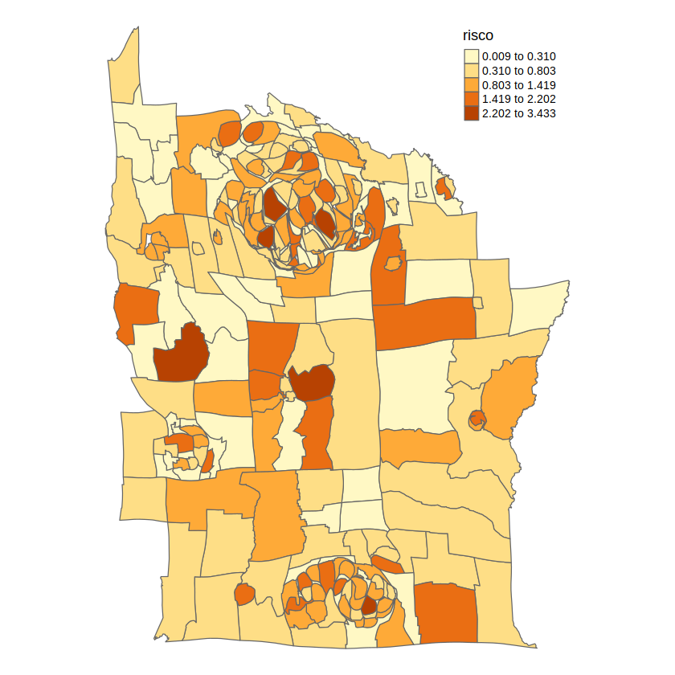
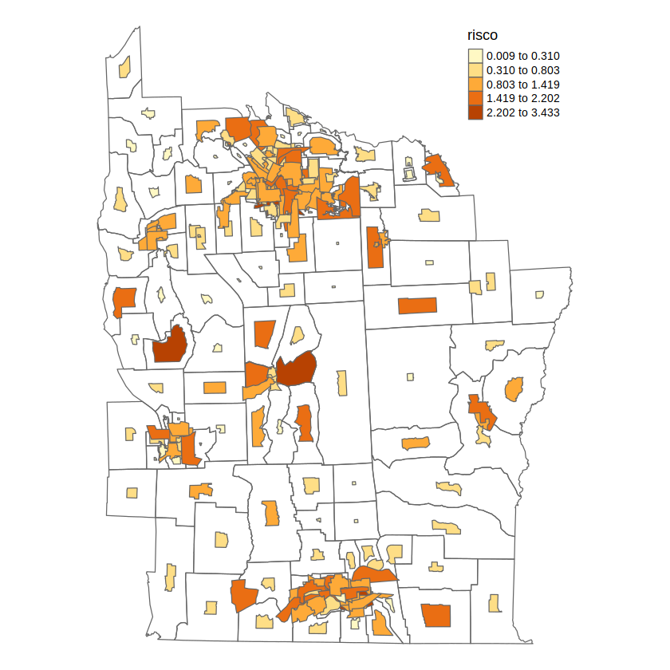
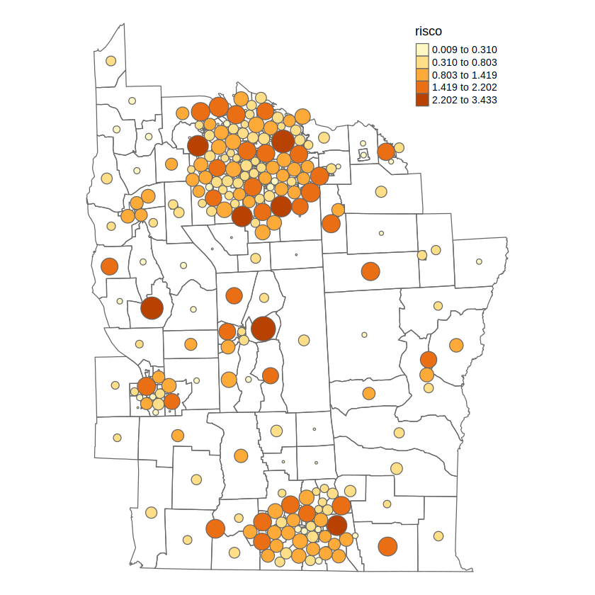

Dashboard Interativo de Regressão Espacial
Explorando e Sumarizando Análises Espaciais em R
Bem-vindo ao Dashboard de Regressão Espacial
Este dashboard interativo foi desenvolvido para explicar e sumarizar os conceitos e aplicações de regressão espacial, com base nos materiais fornecidos (um arquivo PDF conceitual, um script R e as saídas visuais da execução desse script).
A análise de dados espaciais considera a localização geográfica como uma variável importante, reconhecendo que "coisas próximas tendem a ser mais relacionadas do que coisas distantes" (Primeira Lei da Geografia de Tobler).
Conteúdo dos Arquivos Fonte:
- Regressão_Espacial.pdf (original): Introduz a regressão linear clássica e, em seguida, os modelos de regressão espacial (SAR, CAR, GWR).
- regressao_espacial_doctor.txt (Script R): Implementa as análises.
- Imagens (img1.png - img11.png): Saídas visuais da execução do script R, incorporadas neste dashboard.
Navegue pelas abas para explorar cada seção da análise.
Tecnologias Utilizadas no Dashboard:
- HTML, CSS (TailwindCSS)
- JavaScript
- Chart.js (para gráficos)
- Font Awesome (ícones)
Regressão Linear Simples
Exemplo: Planejamento de Propagandas.
Gráfico Interativo (Chart.js):
Visualizações do Script R:
Gráfico de Dispersão (plot base do R). (Fonte: img1.png)
Linha de Regressão e Intervalo de Confiança (ggplot2). (Fonte: img2.png)
Resultados e Interpretação:
Modelo: $y_{predito} = 117.377 + 9.620x$ (conforme sumário do R em `regressao_linear_NY.pdf`, p. 2).
- Intercepto ($\beta_0$): 117.377
- Coeficiente de Anúncios ($\beta_1$): 9.620
- Correlação (r): 0.8721 (conforme `cor(x,y)` no R, `regressao_linear_NY.pdf`, p. 2)
- R-quadrado Ajustado: 0.7307 (73.07%)
Regressão Espacial: Casos de Leucemia em NY (Dataset NY8)
Análise baseada nas saídas visuais do script R.
1. Visualização Inicial das Variáveis

Mapas coropléticos: PROPCAS_mil_hab, PCTAGE65P, PEXPOSURE, PCTOWNHOME. (Fonte: img4.jpg)
2. Teste de Autocorrelação Espacial (I de Moran) nos Resíduos do Modelo OLS
Após ajustar um modelo linear `nylm <- lm(Z ~ PEXPOSURE + PCTOWNHOME, data = NY8)`, o teste de Moran e o correlograma dos resíduos são analisados.
Correlograma espacial (I de Moran) para os resíduos do modelo OLS (`NY8resid`). (Fonte: img5.png)
O teste de Moran para os resíduos do modelo `nylm` (saída textual no PDF `regressao_linear_NY.pdf`, p. 6) resultou em: Moran I = 0.1242, p-value = 0.0001098, indicando autocorrelação espacial significativa.
3. Ajuste e Comparação de Modelos Espaciais (SAR e CAR)
Modelos SAR e CAR são ajustados. A comparação via AIC (considerando os modelos com matriz de vizinhança `MvizB`, estilo "B" - conforme PDF `regressao_linear_NY.pdf`, p. 11) sugere:
- AIC (Linear OLS): 605.63
- AIC (SAR com MvizB): 595.83
- AIC (CAR com MvizB): 594.16
O modelo CAR com matriz `MvizB` (NY8carB) apresenta o menor AIC. No entanto, o script original e as conclusões do material conceitual focam no `NY8car` (com matriz `Mviz` estilo "W"). Para consistência, as visualizações seguintes referem-se ao `NY8car`.
4. Visualização do Modelo CAR (`NY8car` com Mviz estilo "W")
Mapas: Valores Observados de Z (esquerda) e Valores Ajustados pelo Modelo CAR (direita). (Fonte: img6.png)
Diagnóstico do Modelo CAR:
Diagnóstico do Modelo CAR: Observado vs. Ajustado (esquerda) e Resíduos vs. Ajustado (direita). (Fonte: img7.png)
5. Mapa de Risco Relativo e Exposição (Baseado no Modelo CAR)
Mapas: Risco Relativo de Casos (calculado com `NY8car`) e Exposição ao TCE (PEXPOSURE). (Fonte: img8.png)
Visualização Avançada: Cartogramas (NY8 Risco)
Cartogramas baseados na variável `risco` (calculada com o modelo `NY8car`).
Cartograma de Área Contínua
Cartograma Contínuo. (Fonte: img9.png)
Cartograma de Área Não Contígua
Cartograma Não Contíguo. (Fonte: img10.png)
Cartograma de Dorling
Cartograma de Dorling. (Fonte: img11.png)